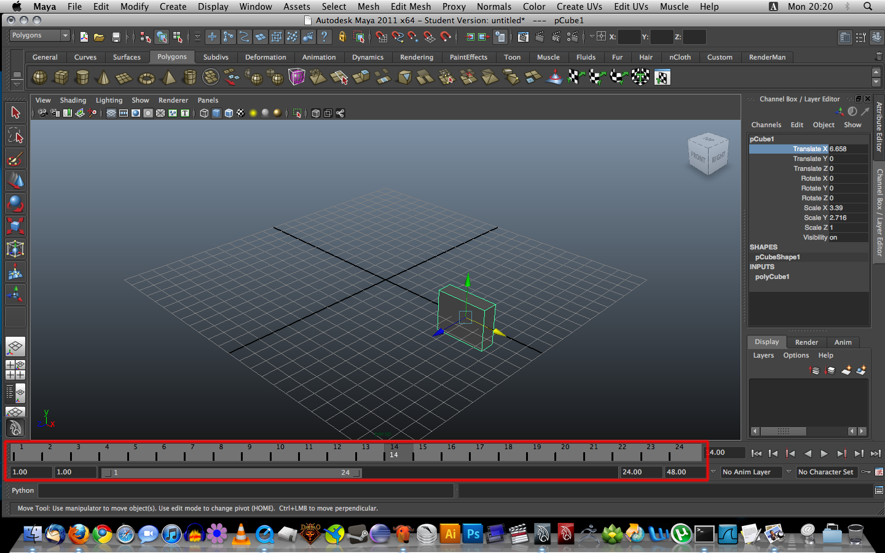

You are here: Home → Introduction to Maya
Introduction to Maya
Welcome to the first UCBUGG lab exercise. We will be covering the basics of Maya in the following pages.
Configure OS X / Launch Maya
If you are not using a Mac Pro in the CITRUS lab, feel free to skip this section.
Setup the Mouse
The contextual menu in Maya, opened via right-click, is a very important tool for the seasoned Maya user. However, the Mac Pros don't have right-click or the middle mouse button enabled by default. Open up System Preferences. Select Mouse and Keyboard. Select Mouse in the top menu. Set the right-click button to Secondary. Also change the middle mouse button from "Off" to "Button 3". You may need to change this setting twice for it to stick.
Launch Maya
The simplest way to launch Maya is to click the Spotlight icon in the upper right, type "Maya", and click on the Maya menu item.
If spotlight isn't working, open up Finder, select Applications in the left bar, and Navigate to Autodesk → maya2011 → Maya.
Enable Infinite Undo
When learning Maya, you're going to make mistakes (no matter how good you are). Pressing Z will undo your last move in Maya. By default, Maya only lets you undo a certain number of moves. To enable infinite undo, Select Windows → Settings/Preferences → Preferences. Select the Undo menu from the side bar and change the Queue to Infinite.
Creating a Maya Project
Even the smallest 3d animations can involve dozens of files. Without some way of organizing them, things can quickly get messy and unmanageable. That's why it's important to create a project.
To create a new project, navigate to File → Project → New... which will open the "New Project" dialog window. Name your project (YourFirstName)-UCBUGG-Lab. Before saving, fill in the "Scenes", "Images", and "Source Images" project locations with "scenes", "images", and "sourceimages" respectively. Once you've done that, save the project somewhere in your home directory. You will be using different lab machines, so make sure to save it in your home directory. If you aren't sure where your home directory is, ask a facilitator.
Interface
Now that you've created a project, it's time to introduce you to Maya's interface. It may look really complicated at first, but don't worry! This tutorial should give you a good overview of what everything is.
Drop-down menu
Depending on what you're trying to do at the moment, the drop-down menu gives you access to different options based on your selections. Try a few different options, and notice how the top bar changes based on each selection.
Basically, everything you can do in Maya can be found in the menus in the top bar. These menus are determined by your drop-down menu choice.
Going through the top bar menus, you may notice that there are little boxes next to some of the text. These option boxes are very important. These option boxes allow you to tweak the settings on your selection.
The Shelf
Having to go through several menus to get to an action you often use isn't very efficient. The shelf contains shelf icons that allow quick access to often used actions. The only drawback to using the shelf, compared to the menu selection method, is that you do not have access to the option box. However, for actions where the option box isn't required, using the shelf will save you valuable time.
If you can't see the shelf tabs (as shown in the picture), click the small black triangle to the left of the shelf and select the Shelf Tabs option.
The Toolbox
To the left, you have your basic Tool Box for Maya. These tools are a few of the most frequently used actions in Maya. Hovering over each icon gives you a description of what they do. The last icon in the column will always be your last used tool.
Creating and Manipulating Objects
Creating an Object
Now that you're familiar with the shelf and toolbox, lets actually make something. Go to the Polygons tab in the shelf and click on the Polygon Cube icon (the second one from the left). A cube will pop up in the center of the screen. (If a cube doesn't pop up, and instead you are prompted to "Drag on the grid", then click and drag to form the base of the cube, and drag upwards for the height.)
Manipulating an Object
Maya would be a pretty boring program if you couldn't do anything with the objects that you create. There are several transformations that you can apply to any object. These transformations include move, rotate, and scale. However, in order to transform an object, it must first be selected.
Select - Q
You can select an object by clicking it, and deselect it by clicking somewhere else. It's useful to note that even though there is a dedicated selection tool, you don't have to be using it to select an object. Try deselecting your cube, and note that the wireframe turns from green to dark blue. This tells you that the cube is no longer selected. The keyboard shortcut for the Select tool is Q.
Move - W
In order to move an object, we need to use the move tool. You can select the move tool by either clicking the move tool icon in the toolbox, or by pressing the w key. Once the move tool is selected, you will see that a blue, red, and green arrow gizmo has appeared on the selected object. By clicking on the arrows, you can move the cube along the x, y, or z axes (you can see which axis is which by looking at the little diagram in the bottom-left corner of the viewport). The yellow square in the center allows you to move the cube in any direction, but gives you less control over which axis it moves along, and usually results in unintended movement.
Rotate - E
You can select the rotate tool from the toolbox, or by pressing the e key. Notice that the gizmo is now an outline of a sphere with green, red, blue, and yellow lines. You can rotate the cube along the x,y, or z axes by using the red, green, and blue arrows. Try rotating your cube a bit to see how the tool works. Again, the yellow portion of the gizmo will rotate the cube around an arbitrary axis, and is often not what you want.
Scale - R
You can select the scale tool from the toolbox, or by pressing the r key. Notice that the gizmo turns into 4 different colored cubes. To scale the cube in only one direction, click and drag a colored cube in that direction. To scale in all directions, click and drag the yellow cube in the center. Try increasing the size of your cube in 1 direction, to turn it into a rectangle.
The Channel Box
If you look to the right of the main viewport (the window with your cube in it), you'll see the Channel Box. If not, click the top right button to open it up.
The channel box contains information about the object that you currently have selected. Select your cube, and look at what the Channel Box says about it. Now move the cube along the x-axis using the move tool (w), and observe that the Translate X value in the Channel Box changes. The Channel Box can be used to input specific translate, rotate, and scale values, as well as other information relevant to your selected object.
Navigation and Views
Maya would be really annoying to use if there wasn't a way to look at an object from multiple perspectives. Luckily, you can control the camera in your viewport to change your view of the scene.
Zoom View
To manually zoom in and out on an object, just scroll up or down using the mouse wheel. If your mouse doesn't have a scroll wheel, alt+rightclick+drag (PC), or command+rightlick+drag (OS X) will also work.
Rotate View
To rotate your view of the object (note: this is not the same as rotating the object!), hold the alt key (PC) or command key (OS X), and then click+drag. You should notice that you are now rotating around the cube.
Move View
To move the view, hold alt + MMB (Middle Mouse Button) + drag in any direction. You should notice that the view moves int he direction of the drag.
Perspective vs Orthogonal Views
Take a look at the bottom of the viewport, and you'll notice that it says "persp." Up until now, you've been doing all of your work in Perspective View. Now go to the toolbox and click the Four View view arrangement option. Your viewport should now contain four different windows, one of which is the persp window that you were using previously. The other 3 views -- top, front, and side -- are called Orthogonal Views. Unlike Perspective View, an object's size does not decrease as it gets further away from the camera in Orthogonal View. Orthogonal views are very useful for reasons that will become clear later. You can switch between your current view arrangement, and the last one that you used by pressing the space bar.
Switching Between The Two
Switching between different views can be tiresome and time consuming. Maya provides a very helpful shortcut for navigating panels quickly and easily: the space bar. Open up the Four View (discussed above). With your mouse over the "Perspective" panel, tap the space bar. Maya will maximize the panel your mouse is hovering over to give you a better look at that panel. To go back to the previous layout, simply tap the space bar again.
Display Options
You may have noticed that your cube is just a bunch of lines. While a wireframe is often useful when doing modeling, it is often not the best way to see what your model really looks like. In order to get a better view of your cube, navigate to the Shading menu within the viewport, and select Smooth Shade All. Notice that your wireframe cube is now a solid gray cube. There are several other shading options in the shading menu, try a few of them to see what they do.
Extra for Experts
In this section, we introduce several features of maya that you won't be using for a while, so feel free to skip it if you just want to learn the basics right now. But make sure to continue reading as there is an assignment at the end of the lab!
Timeline
You may have noticed the numbers going from 1-24 near the bottom of the screen. This is called the Timeline, and is used for animating objects. The numbers correspond to frames, with one frame being 1/24th of a second.

Script Editor
There is a button on the bottom-right of the Maya window that looks like a window with two rectangles in it. This button will open the Script Editor. The Script Editor allows you to write code in either Python or Maya Embedded Language (MEL). If you're technically inclined, you can do some really cool things using scripts. For the purposes of this class, knowing MEL or Python definitely isn't necessary, but the option is there if you're interested.
Settings
You can open the settings window by navigating to Window → Settings/Preferences → Preferences. Here, you can change various settings related to Maya's interface and display. There are far too many to list here, so ask a facilitator if you have any questions.

Domo Arigato, Mr. Roboto - Your first Piece of Art
Creating a Simple Robot
In this assignment, you're going to have to create a robot using primitive polygons. You may use any modification tool you like. I'll show you how to make a quick robot with the tools explained in this tutorial.
First, I go to my Polygons shelf and click the Cube icon to create my head. After focusing my view and setting my shading options, I'm going to use the move tool (W) and position my head in the front view. To be precise, you could type in a numerical value in the Translate Y field in the channel box to achieve the same effect.
Next, I'm going to create another cube, scale it, and move it underneath my head (all this is done by switching between the FRONT and SIDE view). To see where the objects are relative to each other, use the persp view and rotate around your selection.
Quick Aside: The Outliner
Navigate to Window → Outliner. This will open up a window called the Outliner. You'll notice that there are several items in the list such as persp, top front, side, pCube1, and pCube2. If you click on pCube1, you'll notice that this is the cube you're using for the head of your robot. Advanced models can have hundreds or even thousands of polygons, and if they were all named like this, modeling would be very confusing. Double-click each of your cubes and rename them to head and torso. As you build the rest of your robot, make an effort to rename each object to something more descriptive than pCube or pSphere.
And Now Back to our Robot
Next, I create a cylinder, rotate it about 90 degrees (using the channel box, move it up, and duplicate it (using ⌘ - D) and move the duplicate to the other side.
Next, I create a Sphere, scale it, and move it to the end of the right (your right, not the robot's) cylinder. I then duplicate it and move the duplicate to the other side.
I then create a Polygon Pipe, scale it, and move it between the head and the torso. To zoom in on an area, you can hold alt + ctrl + drag a box around the area and the window should zoom in accordingly.
Next, I create another cylinder, scale it, move it under the torso and rotate it a bit. I then duplicate it and move the duplicate to the other side.
And there you have it, a simple robot! Of course, this is the barest of bare a robot can get. Add your own creativity and style to your robot. It doesn't necessarily have to be a biped. It could be a quadruped or whatever you desire. As long as you use only primitive objects, and the move, rotate, and scale tool, the sky's the limit.
Mini Project Part 1
Your robot ties into Part 1 of the Mini-Project. Check out the assignment the due date and submission instructions.